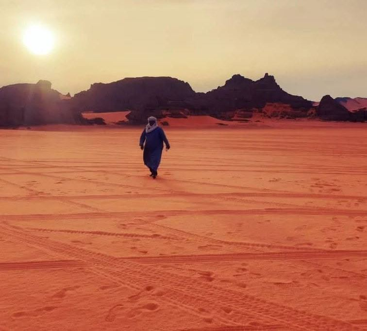
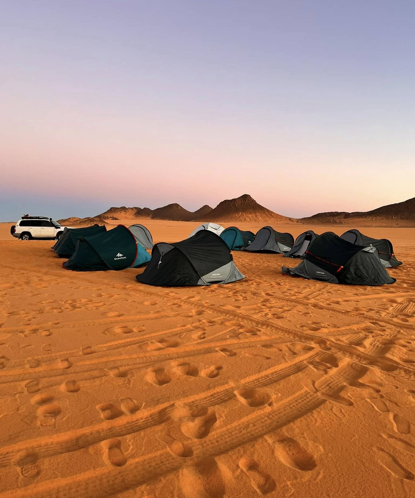

Red Tadrart
The great classic: ember-coloured dunes, sandstone arches and ancient carvings, up to the Libyan border.
Sample content, editableLength6 days, 5 nights
LevelEasy
SeasonOctober to April
Group2 to 12 people
The itinerary
- Day 1
Arrival in Djanet
Airport welcome, Djanet museum and local market, night at camp.
- Day 2
Road to the Tadrart
South-east track via Tikoubaouine, first camp.
- Day 3
Oued In Djerane
Rock carvings and red sandstone canyons.
- Day 4
Tin Merzouga
The heart of the Tadrart: a sea of red dunes.
- Day 5
Moul n'Aga and the arches
Natural arches and rock paintings.
- Day 6
Back to Djanet
A last tea in the dunes, airport transfer.



Travel info
Visa, flights, seasonFAQ
All questionsDestinations
Discover the placesMore tours
All tours
Ihrir and Essendilène
The hidden springs of the Tassili: a lake between cliffs, palm trees and Mina's favourite canyon.
View the tour
Tassili Trek
A climb on foot onto the plateau, with pack donkeys, to the stone city of Sefar.
View the tour
Djanet with family
A trip at a child's pace: canyons, carvings underfoot and sliding down the dunes.
View the tourYour journey to Djanet starts with a message
Tell us your dates and wishes. Mina replies personally within 24 hours.